Backcountry hike • July 5–6, 2024
Tonquin Valley
Tonquin Valley is one of those hikes that feels easy on paper but huge in your memory. It is roughly 18–20 km one way to the valley, and depending on where you camp or wander, the total round trip can land around 35–40 km. We did it in two days, with a taxi drop at the trailhead and a parked car waiting at the finish, and it became one of the most beautiful and chaotic mountain trips we’ve ever done.
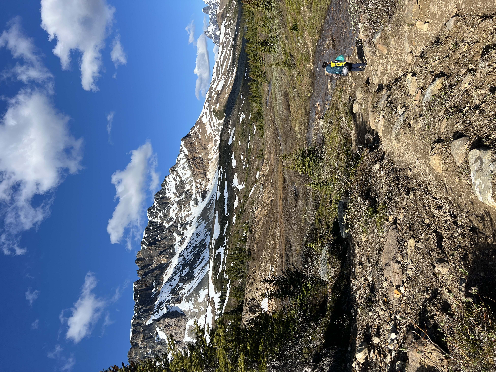
We started this trip with that perfect kind of confidence that comes before a mountain adventure has a chance to teach you humility. The weather was sunny, the trail felt alive, and the whole valley looked like a postcard. We had planned to camp near the start of the MacCarib area, but the pace was good and the energy was better, so before long we were already pushing toward Portal instead of stopping where we originally meant to.
That was the first bright, stupidly optimistic sign: we were moving so well that we basically outran the plan. By the time the sun started sliding lower, we were still smiling, still climbing, still convinced the day belonged to us. We had the whole valley in front of us, the peaks glowing warm and golden, and the kind of light that makes every step feel cinematic.
Then came the part that turned the trip from “beautiful day hike” into “we will never forget this.” When night fell, the trail changed. The water level rose, the ground turned swampy, and there were stretches where crossing felt less like hiking and more like negotiating with the terrain itself. We were wet, tired, and a little stunned by how quickly the trail transformed into something messy and difficult. By the end of the night, we were no longer trying to finish the route in style — we were just trying to get through it.
“We thought we were just doing a beautiful two-day hike. Somewhere between the valley and the dark, it became a story about endurance, weather, and the kind of luck that only feels good after it’s over.”
Day 1 — bright skies, long walking, and a trail that changed shape after sunset
The first day was everything we wanted from the hike. We were out early, the mountain light was unreal, and we were moving at the kind of pace that makes you feel unstoppable. It was exactly the kind of day that makes you want to take ten more photos every time the scenery changes.
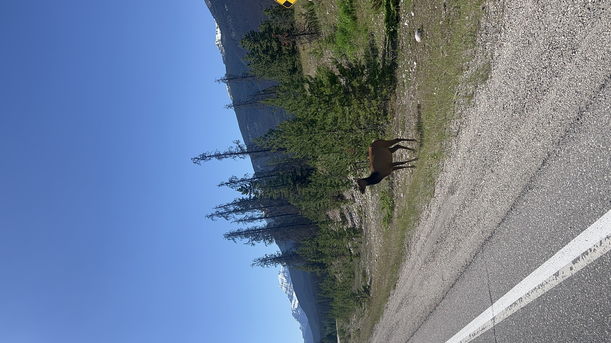
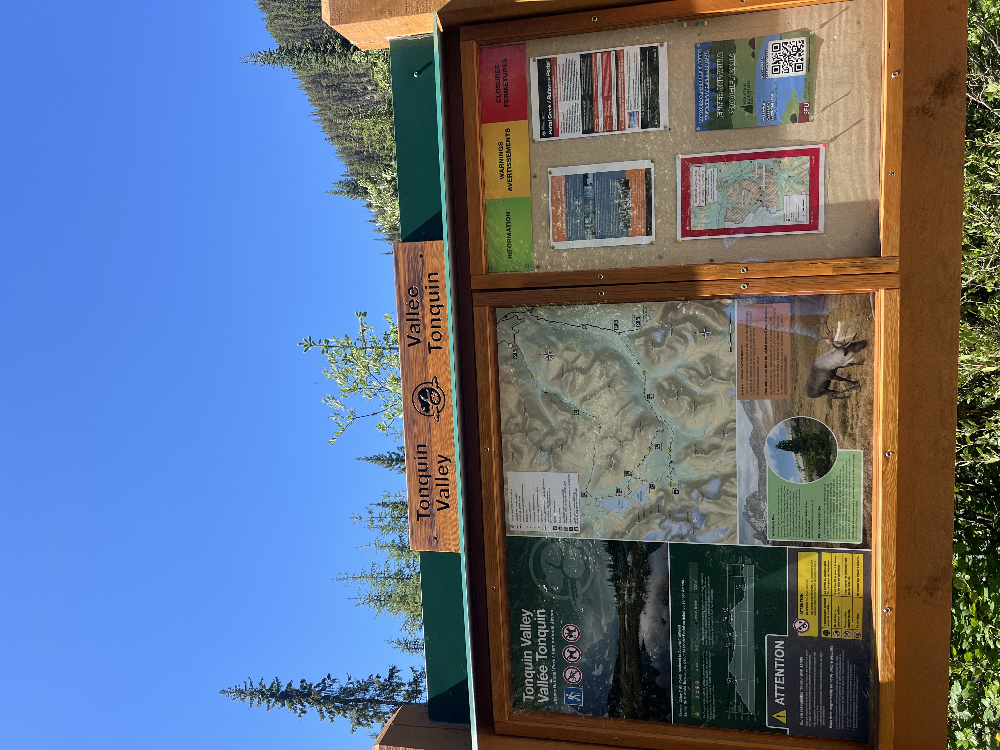
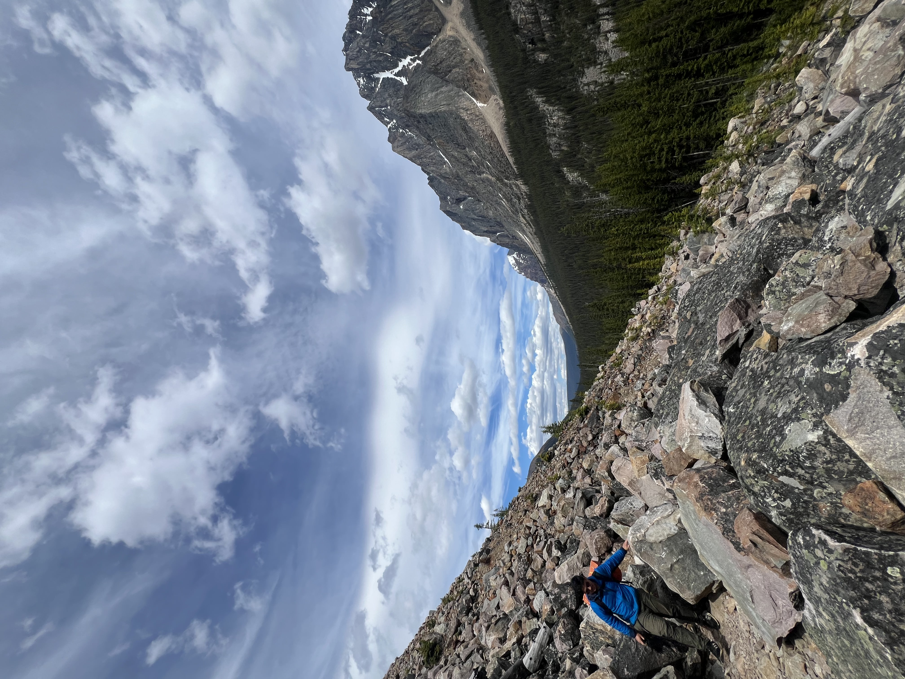
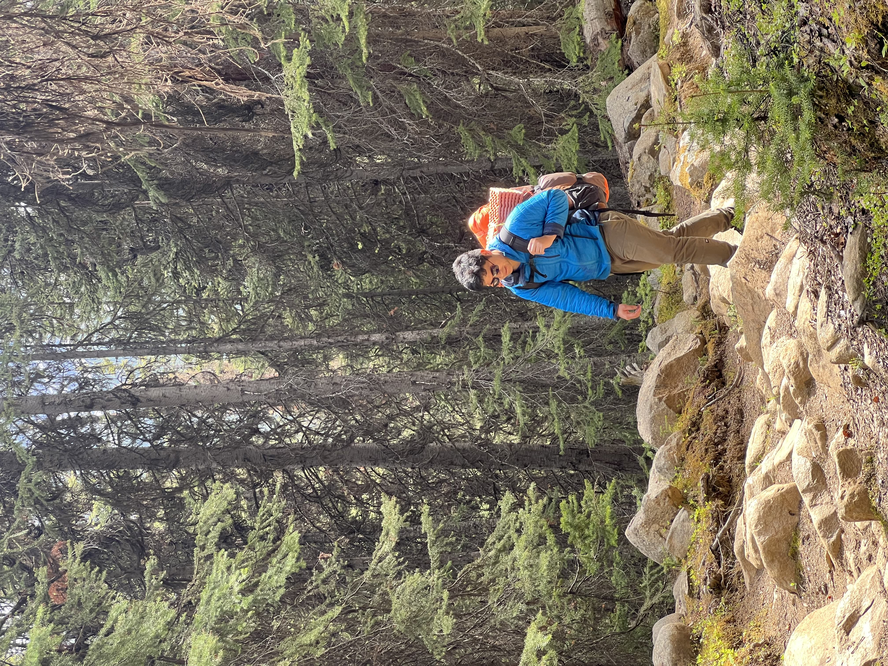
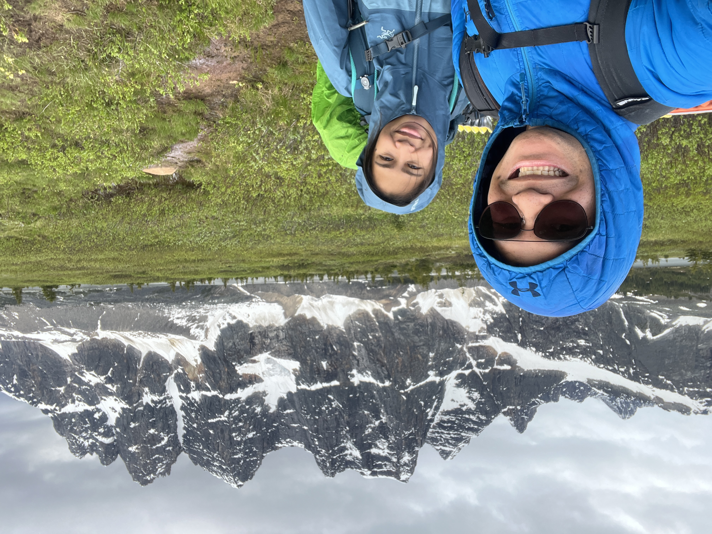
Nightfall — when the river rose and the trail became a problem
We were due for a good night of sleep, but the mountain had other ideas. Once it got dark, the weather turned heavy and the trail’s water crossings were no longer manageable. The water level had climbed, the ground was swampy, and there were sections we simply could not cross cleanly. It wasn’t dramatic in a cinematic way — it was more like the land itself had changed shape in front of us.
That’s when we found the backcountry lodge, a shelter that saved the night and probably the whole mood of the trip. We were cold, soaked, and tired, but we had a roof, warm shelter, and a small, surreal sense of relief. The rain came down hard, and we sat there for a while grateful to be somewhere dry and not drowning in the valley floor.
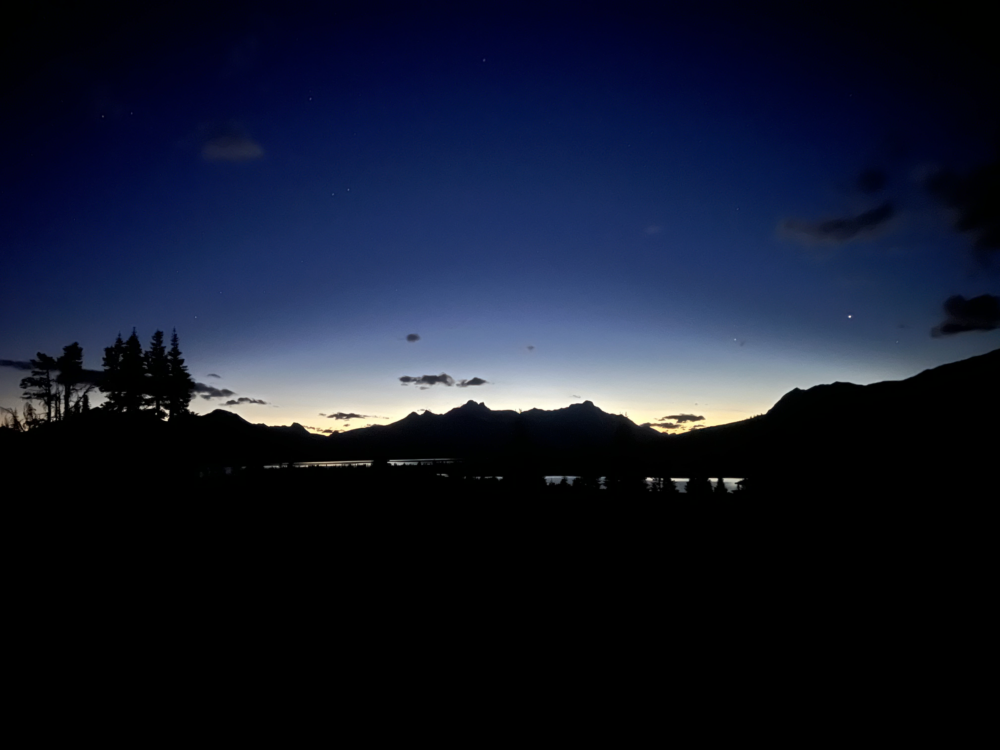
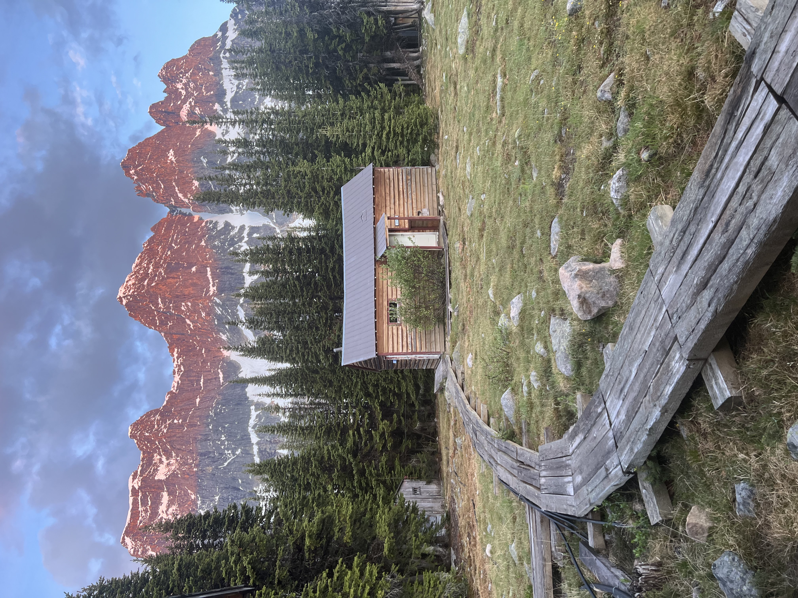
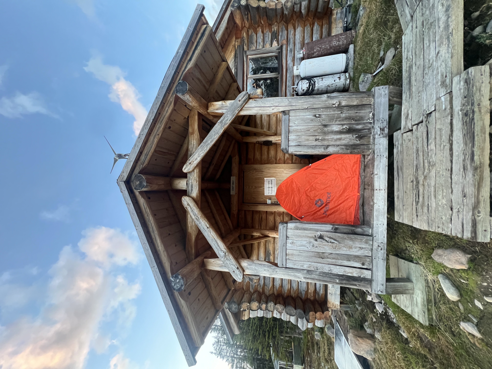
Day 2 — the valley looked like a painting
We woke up to a completely different mood. The rain had passed, the sky was bright, and the whole valley looked somehow sharper, cleaner, and even more alive than it had before. We got a proper breakfast, took it all in, and headed out on a beautiful morning walk through the forest and meadows. It felt like the trail was apologizing for the night before.
We did not linger on the idea of “camping at Portal.” We had made it there early enough that it no longer made sense to stop. We just kept going, and the day unfolded around us in the best way possible. Strong views, easy hiking, plenty of mountain air, and the satisfaction of finishing a route that had initially looked simple but left a much bigger impression than expected.
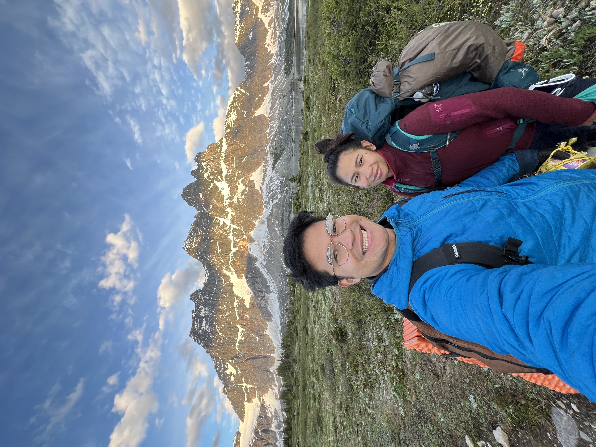
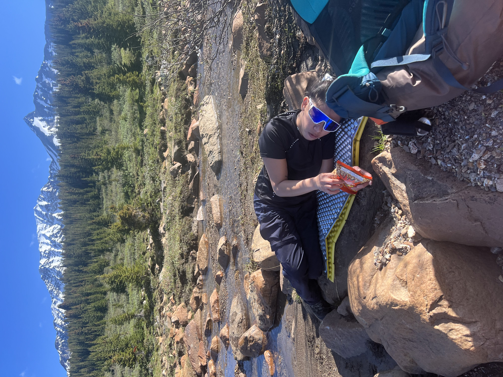
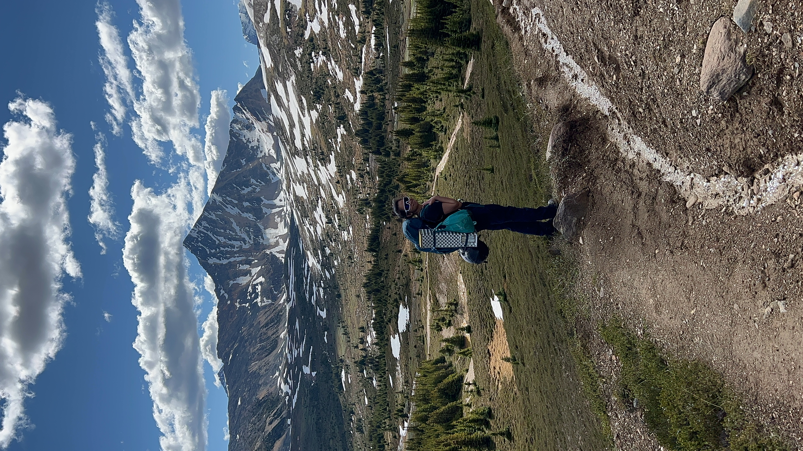